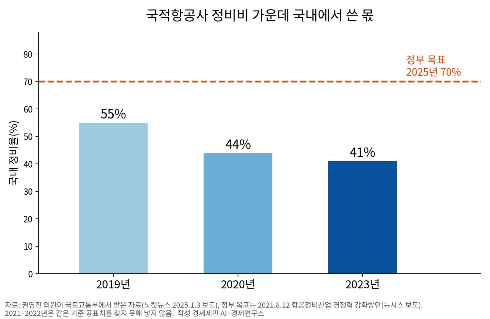
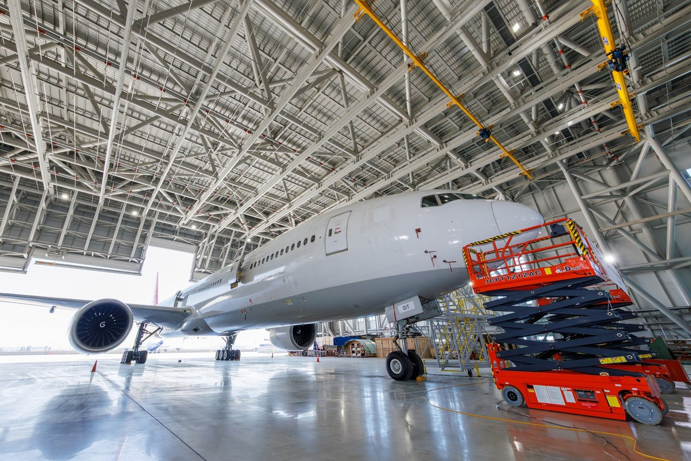

[글로벌 인천공항⑮] 해외 항공기 4001대 들인 샤먼, 인천공항 정비도 남의 물량으로
국내 정비율 70% 목표, 2023년 41%로 뒷걸음
샤먼 고객 30곳 가까운 나라·지역, 감독 묶어 체류 단축
인천 첫 개조기도 외국 리스사 물량, 격납고 자리 넷은 빈칸
AI경제저널=김갑봉 기자 | 샤먼 자유무역시험구 영문 누리집은 7월 28일 해외 보잉 항공기 한 대가 최근 하에코 샤먼 격납고에 들어왔다고 전했다. 올해 116번째이고, 1996년 샤먼이 해외 항공기 정비를 시작한 뒤 4001번째다. 중국 도시 가운데 가장 많다.
인천공항 첫 개조 일감도 남의 항공기다. 리스사 에어캡이 가진 보잉 777 여객기를 홍콩 플라이메타가 쓸 화물기로 바꾼다. 인천국제공항공사는 8월 6일에도 10월께 출고를 목표로 잡았고, 경향신문은 같은 날 11월쯤 출고된다고 전했다.
샤먼은 2021~2025년 국경 밖에서 들어온 항공기 998대를 정비해 중국에서 가장 많았다. 인천 개조 일감은 이제 시작이다. 인천도 국적항공사 물량을 되찾는 데서 멈추지 말고 한중일 경제블록 안팎의 외국 항공사 물량을 받아야 한다.

비용 오르자 밖으로 더 간 정비
정부는 2021년 8월 항공정비산업 경쟁력 강화방안에서 국내 정비율(정비비 가운데 국내에서 쓴 몫)을 2020년 44%에서 2025년 70%로 높인다고 했다. 권영진 의원이 받은 국토교통부 자료로는 2023년 41%로 3%포인트 낮아졌다.
그해 국적항공사 정비비 3조3697억원 가운데 1조9898억원이 나라 밖에서 쓰였다. 같은 자료에서 저비용항공사는 해외 몫이 70%를 넘겼다. 국토교통부는 코로나 뒤 부품값 등이 오른 탓으로 돌렸다.
정비 고객은 값과 함께 기간을 따진다. 경제주간지 이코노미스트는 9월 20일 항공사가 정비 기간에 항공기나 엔진을 쓰지 못해 기간과 비용에 민감하다고 짚었다. 아시아 정비 거점인 싱가포르·중국과 겨루는 일도 피할 수 없다고 봤다.
해외 물량과 세관으로 큰 샤먼
출발점은 스와이어그룹 계열 홍콩 정비업체 하에코(HAECO)가 1993년 세운 하에코 샤먼이다. 하니웰과 싱가포르 ST엔지니어링도 왔다. 중정비(기체를 뜯는 대규모 점검)부터 화물기 개조, 엔진 정비, 훈련까지 샤먼 한곳에서 한다.
하에코 샤먼은 4만6000㎡ 단지에서 광동체(대형기) 12대와 협동체(중소형기) 5대를 한꺼번에 받는다. 에미레이트항공과도 계약했고 주문 일부는 2030년 치까지 잡혀 있다고 밝혔다. 기지 고객은 9월 기준 30곳 가까운 나라·지역이다.
샤먼은 2017년 중국 첫 시범 지역 가운데 하나로 세관 특수감독구역(관세 없이 물품을 두는 구역) 밖 보세 정비를 열었다. 이후 담보 면제와 세금 환급도 허용했다. 정비 감독을 하나로 묶자 항공기 한 대 체류는 하루이틀, 통관 시간은 25% 넘게 줄었다.
중국 정부도 거든다. 상무부 등 9개 부처는 8월 보세 항공정비를 넓히는 지침을 냈다. 싱가포르 SIA엔지니어링도 3월 푸젠성 공항 정비업체 아포트AME 지분 30%를 확보해 중국 본토 첫 합작에 나섰다. 샤먼 일감의 80% 이상은 해외 주문이다.
한 항공사로는 모자란 엔진 물량
영국 카디프대 연구진은 2007년 항공사 8곳을 살펴 운항정비(비행 사이사이 점검) 같은 핵심 업무는 흔히 직접 한다고 밝혔다. 엔진 정비처럼 한 항공사로는 수요가 적은 일은 자주 밖에 맡겼다. 연구진은 정비비를 항공사 운영비의 10~15%로 봤다.
여러 항공사 엔진을 모은 정비기지는 고정비를 더 많은 물량에 나눠 단가를 낮춘다. 규모의 경제다. 한 기업이 여러 일을 함께 해 비용을 줄이는 것은 범위의 경제다. 공항도 여객·화물에 정비까지 품으면 활주로와 세관을 함께 쓰는 비슷한 이점을 얻을 수 있다.
국내에도 남의 물량을 받은 곳이 있다. 이코노미스트 보도를 보면 대한항공은 2004년부터 다른 항공사 엔진 정비를 수주해 델타항공과 중국남방항공 엔진을 고쳤다. 최근에는 헝가리 위즈에어가 보낸 엔진의 정비와 성능시험도 맡고 있다.

블록 안팎 외국 항공사 몫
공사는 2032년까지 235만㎡ 단지에 정비 기업을 모은다. 격납고 자리 7곳 가운데 3곳에 IKCS와 트리니티항공(옛 티웨이항공), 대한항공을 유치했다. 가동하는 곳은 이스라엘 국영기업 IAI가 국내 기업과 세운 IKCS 하나다.
대한항공은 이와 별도로 9월 30일 공항 밖 영종항공일반산업단지에 약 1500억원짜리 엔진·부품 정비시설을 짓기로 협약했다. 이코노미스트는 대한항공 엔진 정비 능력이 올해 134대에서 2030년 500대로 늘 것으로 내다봤다.
2021년 방안은 항공정비 일자리를 7000명에서 2025년 2만3000명으로 늘린다고 했다. 외국 항공사 물량 유치와 국내 정비 항공기 공항사용료 감면, 부품 관세 완화도 담았다. 그래도 국내 정비율은 내려갔다.
2025년 1월 국토교통부 육성 방안 보도도 국내 공항에 오는 외국 항공사는 싱가포르나 중국에 정비를 맡긴다고 짚었다. 공사는 2029년부터 해마다 여객기 6대를 개조할 수 있게 시설을 키운다는 계획이다.
엔진은 대한항공이, 기체 개조는 IKCS가 이미 남의 물량을 받고 있다. 대한항공이 능력을 늘리는 목적도 다른 항공사 엔진 수주다. 남은 격납고 자리 넷을 채우려면 샤먼식 묶음 감독이 인천에도 필요한지 따지고, 공항사용료 감면을 외국 항공사에도 주는지 점검해야 한다.
참고문헌
기관 자료
- 인천국제공항공사, 「인천공항공사, 화물기 개조 초도 항공기 입고로 국내최초 항공정비(MRO) 사업 본격화」(보도자료), 2026년 5월 15일(누리집 게시 5월 18일). https://www.airport.kr/bbs/co_ko/84/139380/artclView.do
- 인천국제공항공사, 「인천공항, 여객·물류 넘어 항공 MRO 허브로 도약」(보도자료), 2026년 8월 6일. https://www.airport.kr/bbs/co_ko/84/139516/artclView.do
- 인천광역시, 「대한항공 항공정비(MRO) 클러스터 조성 및 상생 투자·입주 협약식」(포토시정), 2026년 9월 30일. https://www.incheon.go.kr/intv/TV010201/3089534
- 푸젠성 인민정부 영문 누리집, "110 aircraft undergo maintenance in Xiamen in H1", 2025년 7월 16일. https://www.fujian.gov.cn/english/business/news/202507/t20250716_6967992.htm
- 샤먼 자유무역시험구 영문 누리집, "Xiamen aviation maintenance industry rises to global leadership", 2025년 12월 23일. https://en.ftz.xm.gov.cn/2025-12/23/c_1149782.htm
- 샤먼 자유무역시험구 영문 누리집, "Xiamen services 998 inbound aircraft for maintenance during 14th Five-Year Plan", 2026년 1월 15일. https://en.ftz.xm.gov.cn/2026-01/15/c_1155163.htm
- 샤먼 자유무역시험구 영문 누리집, "Xiamen and Singapore join forces in aviation maintenance", 2026년 3월 20일. https://en.ftz.xm.gov.cn/2026-03/20/c_1170039.htm
- 샤먼 자유무역시험구 영문 누리집, "Xiamen tops 100 overseas aircraft maintenance intakes earlier than in 2025", 2026년 6월 22일. https://en.ftz.xm.gov.cn/2026-06/22/c_1191891.htm
- 샤먼 자유무역시험구 영문 누리집, "Xiamen tops China with over 4,000 overseas aircraft repairs", 2026년 7월 28일. https://en.ftz.xm.gov.cn/2026-07/28/c_1200823.htm
- 샤먼 자유무역시험구 영문 누리집, "China's first outbound bonded aviation repair model lands in Xiamen", 2026년 9월 20일. https://en.ftz.xm.gov.cn/2026-09/20/c_1214800.htm
연구 논문
- Panzar, J. C., & Willig, R. D., "Economies of Scope", 『American Economic Review』 71(2), 1981년 5월, pp.268-272. https://ideas.repec.org/a/aea/aecrev/v71y1981i2p268-72.html
- Al-Kaabi, H., Potter, A. T., & Naim, M. M., "An outsourcing decision model for airlines' MRO activities", 『Journal of Quality in Maintenance Engineering』 13(3), 2007년, pp.217-227. https://doi.org/10.1108/13552510710780258
언론 보도
- 강세훈, "2025년까지 항공정비산업 해외 의존도 30%로 낮춘다", 뉴시스, 2021년 8월 12일(국토교통부 항공정비산업 경쟁력 강화방안 보도). https://www.newsis.com/view/NISX20210812_0001546883
- 이희진, "항공기 MRO 외국에 의존하다가 결국…정부 정책은 '헛바퀴'"(권영진 의원이 받은 국토교통부 자료 인용), 노컷뉴스, 2025년 1월 3일. https://www.nocutnews.co.kr/news/6271280
- 홍찬선, "국토부, 국내 항공정비(MRO)산업 육성 방안 마련", 뉴시스, 2025년 1월 29일. https://www.newsis.com/view/NISX20250123_0003044563
- Craig Waters, "SIAEC wins bid for 30% stake in China's Arport AME", Aviation Business News, 2026년 3월 11일. https://www.aviationbusinessnews.com/industry-news/siaec-wins-bid-for-30-stake-in-chinas-arport-ame
- 박준철, "객실 좌석 전부 뜯어내고 완전히 새출발···인천공항서 국내 첫 '개조 항공기' 11월 출고", 경향신문, 2026년 8월 6일. https://www.khan.co.kr/article/202608061402001
- 박세진, "엔진 정비 연 134대→500대…대한항공, 아시아 '비행기 병원' 노린다", 이코노미스트, 2026년 9월 20일. https://economist.co.kr/article/view/ecn202609160043
- 김재식, "영종 대한항공 MRO 클러스터 조성 속도…인천시, 인천경제청, 대한항공 등 6자 협약으로 사업 본궤도", 뉴스서울, 2026년 9월 30일. https://newsseoul.co.kr/news/view/1065594638044327
[사진 출처]
- [사진1] 위 인천국제공항공사 5월 15일 보도자료 첨부 사진(별첨2, 2026년 5월 13일 촬영)
- [도표1] 경세제민 AI·경제연구소 작성. 자료는 위 노컷뉴스 2025년 1월 3일 보도(국토교통부 자료)와 뉴시스 2021년 8월 12일 보도
※ 이 기사는 AI 프로그램 클로드를 활용해 작성했습니다.
관련기사
- [글로벌 인천공항⑭] 한중 노선 국적사 몫 54%→46%, 베이징·상하이 늘려야
- [글로벌 인천공항⑬] 인천공항 44% 외국인, 연말 끝나는 비자 특례 상설로
- 착륙료 10년·계류장 25년 묶은 인천공항, 싼 값이 항공사를 붙잡는가
- 두바이 막힌 사이 유럽 환승 63%↑, 인천공항 빌린 환승객 붙잡아야
저작권자 © AI경제저널 무단전재 및 재배포, AI학습 및 활용 금지